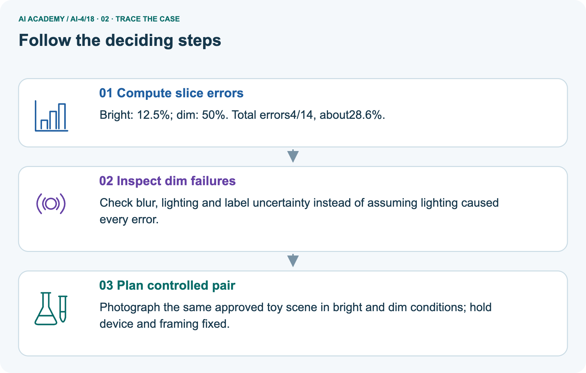
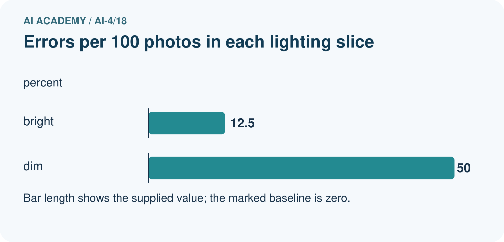
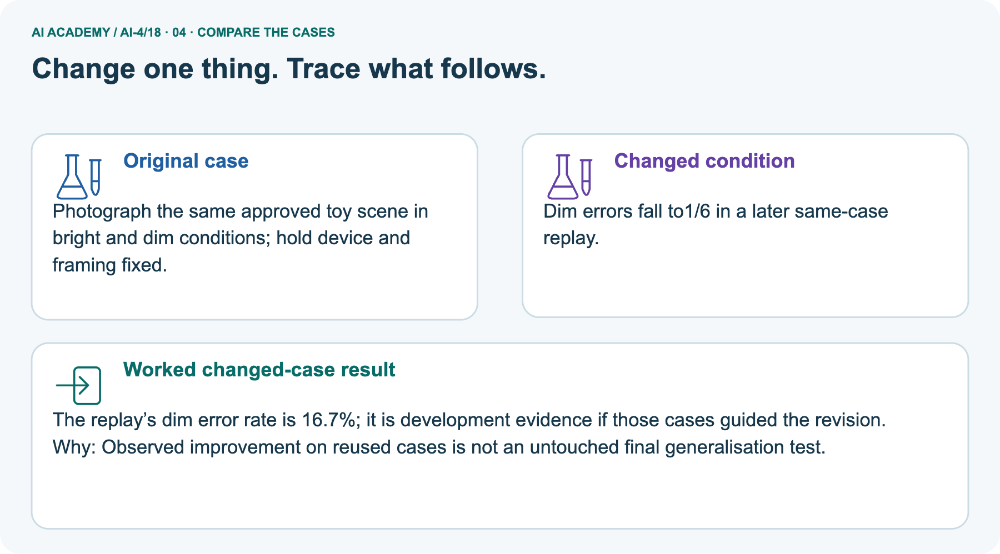
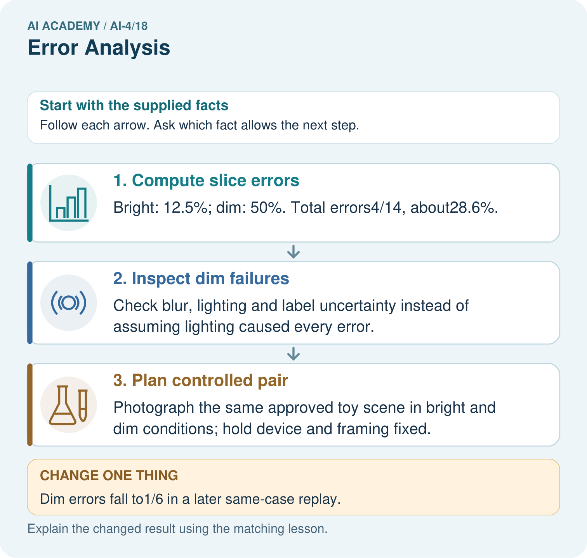
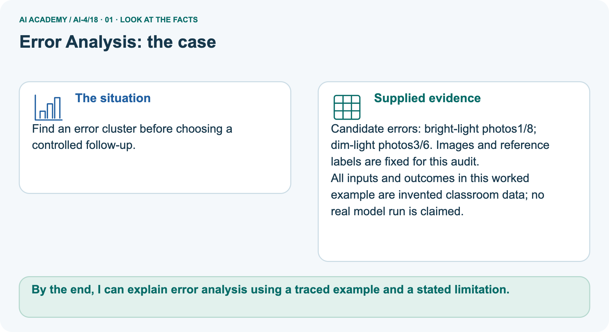
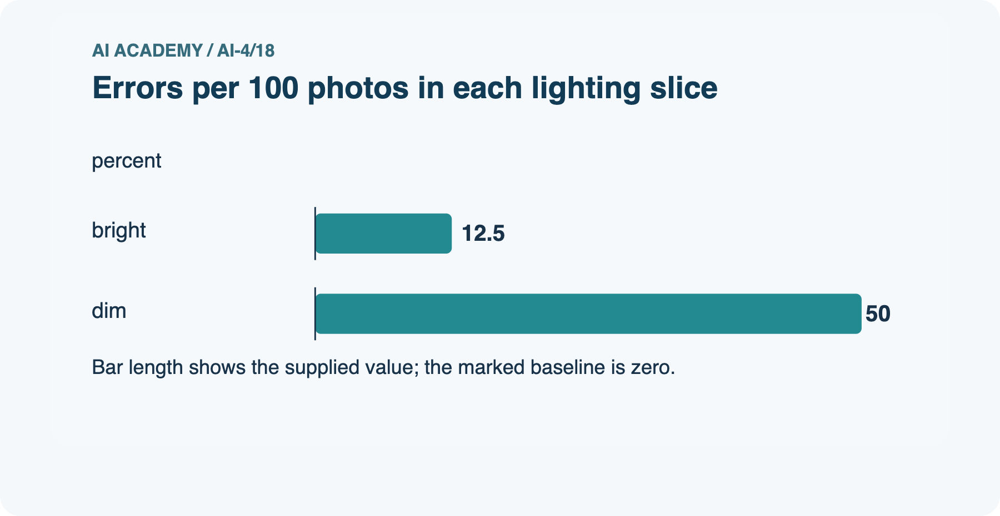
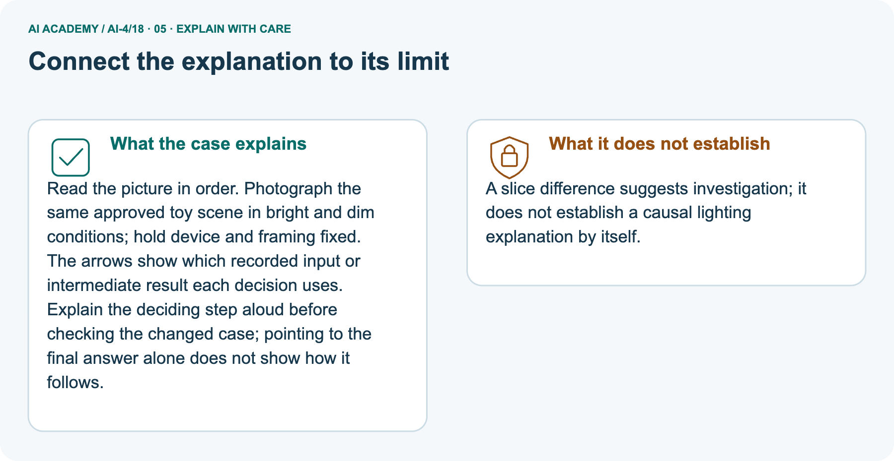

AI Academy · Level 4 · Grade 9 · Week 18 · Student lesson
Error Analysis
Learn to understand, design, build, test and explain AI systems responsibly.
Project: Responsible Plant Classifier
THE CONNECTED WEEK
Keep the cases. Count every slice. Test the explanation.
Use error evidence to propose controlled follow-up without hiding regressions or claiming causes from associations.
Keep one habit: Complete aggregate comparison → pictured percent bars → thirty-case replay → paired-scene proposal → independent route change.
Main lesson · Section 1
Which errors changed, and what would explain them?
An error cluster suggests a test; it does not establish a cause.
Learning goals
I can categorize development errors using evidence.
I can design a controlled change with a stated hypothesis.
I can preserve failures and test boundaries.
Recall matrices and missing case context
Close your notes first. A rough first answer helps us choose the right starting point; it is not a score for your ability.
Without opening the old lesson, explain one key idea from Precision and Recall. Give an example and a mistake that the idea helps you avoid.
Without opening the old lesson, explain one key idea from Confusion Matrix. Give an example and a mistake that the idea helps you avoid.
Without opening the old lesson, explain one key idea from Nearest Neighbors. Give an example and a mistake that the idea helps you avoid.
What does a confusion matrix omit?
End goal
By the end, I can explain error analysis using a traced example and a stated limitation.
Earlier wording, alternatives and picture transcripts
Your learning target
Remember before reading
After trying, check the relevant lesson or ask your teacher. Change the part of your explanation that the evidence shows was wrong.
Grouping errors by observable conditions connects a metric problem to possible data, label, feature, or model causes.

LEARNING TARGET A model fails 6/10 backlit and 2/20 front-lit photos. Compute error rates and design a follow-up that tests lighting rather than leaf identity.
Builder name and experiment date:
Readiness for the connected explanation
This week’s end goal
Main lesson · Section 2
Begin with IDs, references and collection conditions
Keep the observations separate from proposed explanations.
Error-analysis purpose and fictional scope
Error analysis begins with prediction IDs and reference labels. Inspect features, collection conditions and the labelling policy. Do not assume every surprising prediction proves the reference is wrong.
Use development errors to propose a change and specify what outcome would support the explanation.
Use fictional classroom data throughout this investigation. Keep the task, units, reference labels and data split visible as you reason.
Earlier weeks supplied the model-building process; this week examines error analysis and controlled follow-up.
Earlier wording, alternatives and picture transcripts
PICTURE ENTRY
Notice → Predict → Explain
Begin with visible evidence; do not explain more than the picture and information support.
MYSTERY The team must use error analysis to solve a model-building problem. What information do they have? What important evidence is still missing?
Name three visible details without interpreting them.
Predict the data, model, or evaluation decision being made.
Identify one hidden assumption that could change the result.
State what evidence would confirm or reject your prediction.
My prediction and supporting evidence:
A closer explanation
Main lesson · Section 3
Compare slice rates before and after a planned change
A total improvement can conceal a regression in one group.
Complete aggregate development example
A validation audit has 12 dim-light cases with 4 errors and 18 bright-light cases with 3 errors. Rates are 4/12=1/3 and 3/18=1/6. Dim lighting is a useful lead, not proof of causation: camera, route or labels may also differ.
A planned change uses a training-fitted brightness normalization while keeping split and classifier settings fixed.
Optional complete supplied-count comparison script
old_errors = [4, 3]
new_errors = [2, 4]
counts = [12, 18]
for old, new, n in zip(old_errors, new_errors, counts):
print(old / n, new / n)
print(sum(old_errors), sum(new_errors))
# Total errors fall from 7 to 6; one group worsens.Trace before running
Trace the calculation on paper before running this optional Python check. Use the stated fictional inputs and compare intermediate values. The code checks this example; your independent workbook case uses different evidence.
Earlier wording, alternatives and picture transcripts
ML MECHANISM
Input → Model → Evidence
Trace the information, fitted behavior, and evaluation proof separately.


QUESTION Cluster mistakes and propose cause-specific next tests.
MODEL IDEA Grouping errors by observable conditions connects a metric problem to possible data, label, feature, or model causes.
PROOF NEEDED Use an unseen case, visible calculation, error analysis, and a stated limitation.
UNDER THE HOOD Twelve errors are grouped: 6 low light, 3 blurred, 2 label disagreements, 1 unusual species. Largest cluster suggests a lighting representation problem, not proof of the cause.
Draw a fresh data → model → prediction → evaluation trace:
A closer explanation
Connect the picture and the explanation
Point to the input, the deciding step and the result in this week’s visual. Explain the same step in ordinary words. A picture helps when you can say what each part represents.
Main lesson · Section 4
Compare an error lead with a controlled follow-up
Count the cases in each condition before judging its error burden.
Four evaluation conditions

NORMAL Expected data and expected behavior.

Keep this boundary clear
BOUNDARY Value close to a threshold, ambiguous label, or uncertain prediction.

MISSING Necessary field, label, source, or measurement is unavailable.

SHIFTED New lighting, species, device, subgroup, or time condition.
Keep the claim bounded
RELEASE RULE Passing one case never proves generalization. Predefine expected behavior for all four categories.
Choose a revealing case
Which case most threatens today's claim, and why?
Predict the supplied changed case
Change: Dim errors fall to1/6 in a later same-case replay.
Check after predicting
Prediction: The replay’s dim error rate is 16.7%; it is development evidence if those cases guided the revision.
Reason: Observed improvement on reused cases is not an untouched final generalisation test.
Earlier wording, alternatives and picture transcripts
EVALUATION DESIGN
Four Tests, Four Kinds of Evidence
A system is not understood until it survives more than one comfortable example.
NORMAL Expected data and expected behavior.
BOUNDARY Value close to a threshold, ambiguous label, or uncertain prediction.
MISSING Necessary field, label, source, or measurement is unavailable.
SHIFTED New lighting, species, device, subgroup, or time condition.
Change one thing in the pictured case
Main lesson · Section 6
Read slice denominators beside the error-rate bars
Keep the main and pictured cohorts clearly separated.
Complete pictured facts and comparison scope
Find an error cluster before choosing a controlled follow-up.
Candidate errors: bright-light photos1/8; dim-light photos3/6. Images and reference labels are fixed for this audit.
All inputs and outcomes in this worked example are invented classroom data; no real model run is claimed.
The main fixture has dim errors 4/12 and bright errors 3/18, later supplied as 2/12 and 4/18. Dim improves while bright worsens; total falls 7/30 to 6/30. The separate picture has bright 1/8 and dim 3/6, total 4/14. Its bar labels 12.5 and 50 are percentages, not counts from a hundred measured photos. The pictured same-case replay changes dim to 1/6; it is reused development evidence, not fresh generalization.
None of these numbers alone proves lighting caused the errors.
Trace slice rates and a controlled-pair plan



Read the picture one step at a time
Read the picture in order. Photograph the same approved toy scene in bright and dim conditions; hold device and framing fixed. The arrows show which recorded input or intermediate result each decision uses.
Explain the deciding step aloud before checking the changed case; pointing to the final answer alone does not show how it follows.
Inspect the original percent-scale bars



Predict a same-case dim replay
Change one thing: Dim errors fall to1/6 in a later same-case replay. Predict the result before checking the explanation. What remains the same?
Check after predicting



Explain causal and fresh-case limits
A slice difference suggests investigation; it does not establish a causal lighting explanation by itself.
Read the labelled picture: What evidence would support the claim that a change helps fresh dim-light images? Point to the relevant step in the picture, then write the changed result and the rule or evidence that supports it.
Return to the main inspection question
Error analysis and controlled follow-up at a glance
Earlier wording, alternatives and picture transcripts
WORKED EVIDENCE
Reason Step by Step
Predict first. Then check each step. A correct answer without visible evidence cannot be audited.

STEP 1 Twelve errors are grouped: 6 low light, 3 blurred, 2 label disagreements, 1 unusual species.
STEP 2 Largest cluster suggests a lighting representation problem, not proof of the cause.
STEP 3 Collect or transform low-light examples, changing one factor.
STEP 4 Rerun the same evaluation and inspect other slices for regressions.
CHECK Verify the denominator, unit, split, class definition, and data version before interpreting a score.
Recalculate, retrace, or restate the evidence independently:
A closer explanation
Learn from the worked case
Cover the result before checking it. Say what is given, choose the procedure, and follow one step at a time. Then uncover the result and explain your first mismatch. Ask why a step is allowed, not only what number it produces.
A pictorial worked case: Error Analysis
The facts we will use



Why this result follows
What this example does not establish
Main lesson · Section 7
Find a hypothesis reported as an established cause
A surprising output does not automatically prove a bad reference label.
Diagnose the first claim
Diagnose one cause and name the cleanest next experiment:
CLAIM TO CHALLENGE Looking closely at one surprising error is enough to diagnose the model.
State evidence and next-test limits
Do not delete difficult cases to raise the score or reuse final-test errors for an unreported revision.
Once test feedback guides a change, treat it as development evidence and obtain a new independent evaluation for a fresh final claim.
Earlier wording, alternatives and picture transcripts
ERROR DETECTIVE
Compare → Diagnose → Repair
Do not patch the answer. Find the earliest unsupported assumption, data problem, or experiment error.

| Evidence record | Expected | Actual | Likely cause / next test |
|---|---|---|---|
| normal case | passes | ||
| boundary case | defined behavior | ||
| missing case | safe fallback | ||
| shifted case | measured limit |
A closer explanation
Main lesson · Section 8
Practise a controlled change record with less help
Report gains and regressions on the complete comparison set.
Try the supported limit question
Use workbook W2 for the connected example “Error analysis and controlled follow-up”. First fill the input and rule boxes. Try the middle steps before asking for a hint. After a hint, try the next step yourself.
| Plan | Do | Check |
|---|---|---|
| What is given? Which rule or procedure applies? | Record each intermediate step. | Does the result follow? What remains unknown? |
Explain your trace to a partner. Your partner points to one step to check. Swap roles on the next case. Each person writes their own explanation.
Save versions, predicted effects and all outcomes
Write a change record: hypothesis, exact code/data version, controlled factors, predicted effect, full before/after results and decision. Review disagreements using a consistent annotation policy.
If labels are corrected, version the data and rerun all candidates on the same corrected evaluation set.
Explain why evidence and procedure matter
Use the worked case for Error analysis and controlled follow-up. Proposed explanation: “A final answer is enough”. Decide whether this explanation is supported.
Point to the step or supplied fact that decides; explain your repair if needed.
Answer on your own before discussion. If you are unsure, say which step you need help with.
Explain what fresh dim-light evidence would require
What evidence would support the claim that a change helps fresh dim-light images? Point to the relevant step in the picture, then write the changed result and the rule or evidence that supports it.
Reserve the independent route comparison
This is supported practice. Keep the separately named independent case for an attempt before feedback.
Earlier wording, alternatives and picture transcripts
ML STUDIO
Specify Before You Run
A trustworthy result can be reproduced from the recorded data, code, settings, and evaluation rule.

Experiment record
QUESTION + intended use + success threshold
DATA version + grouped split + leakage check
CODE/preprocessing + features + model + settings + seed
METRICS + positive class + units + denominators
PREDICTIONS + errors + subgroup slices + limitations
HUMAN reviewer + release, revise, limit, or stop decision
Write the minimum record needed to reproduce today's result:
A closer explanation
Practise with less help: Explain the limit
Check your reasoning
Explain the picture
Main lesson · Section 9
Run Error Clinic with complete case-level evidence
A useful next test must address the competing explanations, not just the biggest error count.
Complete thirty-case development replay
| Case ID | Light / device / route | Reviewed reference | Old prediction | New supplied prediction |
|---|---|---|---|---|
| D01 | dim / camera A / North | clear | blocked | blocked |
| D02 | dim / camera A / North | blocked | clear | clear |
| D03 | dim / camera A / North | clear | blocked | clear |
| D04 | dim / camera A / North | blocked | clear | blocked |
| D05 | dim / camera A / North | clear | clear | clear |
| D06 | dim / camera A / North | blocked | blocked | blocked |
| D07 | dim / camera A / North | clear | clear | clear |
| D08 | dim / camera A / North | blocked | blocked | blocked |
| D09 | dim / camera A / North | clear | clear | clear |
| D10 | dim / camera A / North | blocked | blocked | blocked |
| D11 | dim / camera A / North | clear | clear | clear |
| D12 | dim / camera A / North | blocked | blocked | blocked |
| B01 | bright / camera B / South | clear | blocked | blocked |
| B02 | bright / camera B / South | blocked | clear | clear |
| B03 | bright / camera B / South | clear | blocked | blocked |
| B04 | bright / camera B / South | blocked | blocked | clear |
| B05 | bright / camera B / South | clear | clear | clear |
| B06 | bright / camera B / South | blocked | blocked | blocked |
| B07 | bright / camera B / South | clear | clear | clear |
| B08 | bright / camera B / South | blocked | blocked | blocked |
| B09 | bright / camera B / South | clear | clear | clear |
| B10 | bright / camera B / South | blocked | blocked | blocked |
| B11 | bright / camera B / South | clear | clear | clear |
| B12 | bright / camera B / South | blocked | blocked | blocked |
| B13 | bright / camera B / South | clear | clear | clear |
| B14 | bright / camera B / South | blocked | blocked | blocked |
| B15 | bright / camera B / South | clear | clear | clear |
| B16 | bright / camera B / South | blocked | blocked | blocked |
| B17 | bright / camera B / South | clear | clear | clear |
| B18 | bright / camera B / South | blocked | blocked | blocked |
Source, supplied-outcome status and confounding
Error Clinic source is a teacher-authored fictional development replay: twelve D cases are dim/camera A/North and eighteen B cases bright/camera B/South. These conditions co-vary, so their slice difference cannot isolate lighting. D01–D04 are old errors; D01–D02 remain new errors. B01–B03 are old errors; B01–B04 are new errors.
Old and new predictions are supplied fixtures, not the result of a model execution in this lesson. A planned training-fitted brightness change is a hypothesis; its training data and implementation are not supplied, so no fitting or causal success is claimed here.
Fully specified follow-up proposal
| Follow-up field | Complete proposed classroom plan |
|---|---|
| Question | Does changing only lighting alter errors for the fixed classifier on the same approved toy scenes? |
| Pairs | Create new scene IDs S1–S4, each with a bright and dim view; keep subject/object positions, camera, route/background and framing fixed within a pair. |
| Controls | Use the same frozen classifier and reviewed target rule; vary only the planned lighting condition and record collection order. Retain scene grouping for later source-separated evaluation. |
| Evidence to record | Case/scene ID, condition, actual reference, frozen prediction, error, blur/visibility notes, and protocol deviations. No results are supplied for this proposal. |
| Limits | Four scene pairs give limited evidence. If used to revise the model, they are development cases; evaluate the revised frozen method on fresh intended-use groups before a final claim. |
Normal, regression, missing-context and changed-cohort probes
| Complete error-analysis probe | Expected bounded check |
|---|---|
| Normal thirty-record replay | Old 7/30 errors; new 6/30; dim 4/12→2/12, bright 3/18→4/18. |
| Boundary one extra bright error B04 | Record the regression even though the overall error count improves. |
| Missing source/condition for proposed X01 | Mark unknown metadata and investigate; do not assign dim or claim an explanatory slice rate from missing context. |
| Changed evaluation: replace bright cases with easier new scenes | Not a same-case before/after comparison; record changed cohort and do not attribute a difference only to the model update. |
Inspect, hypothesize and plan
Annotate every wrong prediction using the complete D/B record table. Count old and new errors by slice and total, including the new B04 failure. Group observable conditions, propose at least one competing explanation and name which missing evidence would distinguish them. Design the supplied same-scene lighting comparison without inventing its outcomes.
If a reference is reviewed and corrected, version it and compare both methods on the same corrected references while preserving the original evaluation record. Keep the independent route A/B task for an unaided first attempt.
Keep evidence and actual execution status
| Case | Prediction | Actual | Calculation / evidence | Meaning / next test |
|---|---|---|---|---|
| Normal | ||||
| Boundary | ||||
| Missing | ||||
| Shifted |
Before trying: what do I expect, and why? While trying: which step could first go wrong? Afterwards: what did I actually observe, and what should change? Keep “not run” if you only traced the procedure.
Earlier wording, alternatives and picture transcripts
EVIDENCE LAB
Predict → Run → Calculate → Interpret
Keep the test conditions fixed, record every result, and change only one planned factor.

1. Write the hypothesis and expected evidence before running.
2. Error Clinic: annotate every wrong prediction, cluster by condition, write hypotheses, and select one measurable next test.
3. Run one normal, one boundary, one missing, and one shifted case.
4. Calculate the metric from raw counts or row-level errors.
5. Interpret what changed, what did not, and what remains unsafe or unknown.
Plan → try → check
Main lesson · Section 14
Try alone: judge a change across two routes
An improved target slice does not automatically mean overall improvement.
Complete independent route counts and scope
Old errors are 5/10 on route A and 2/20 on B. New errors are 3/10 and 5/20. State total and group changes and a justified next step.
This selected route task uses its own group sizes and old/new error counts, not the main lighting or pictured cohort. Keep A’s denominator10 and B’s20 for both methods. The two route groups partition this supplied30-case comparison; no cause, individual IDs or actual change implementation is provided. Report both aggregate and group directions before recommending a next test.
First attempt and support record
Attempt this case before feedback. Record any help. Earlier examples below are further practice; a case already practised with feedback cannot establish fresh transfer.
Your teacher has the independent answer and scoring criteria. Complete the matching workbook week to keep your practice evidence together.
Use feedback after trying
Attempt the independent case before hints. Record whether you worked alone, used a hint or followed a model. After feedback, fix the first unsupported step and explain why it changed.
A later check uses a changed case, not a copied answer.
Earlier wording, alternatives and picture transcripts
Independent case: Apply independently
Week 18 Independent application
Close the worked explanation. Apply the idea to this different question without copying.
Of eight errors, six are on blurry images and two on clear images. Can you conclude blurry images have a higher error rate without group totals?
My answer, with a trace, calculation or supporting evidence
Create and test
Change one relevant detail. Predict the result before testing. Include a boundary or missing-information case when it helps reveal a limit.
My changed input and expected result
Connect to your project
Create the Plant Classifier error log linking case ID, actual, predicted, confidence, condition, likely cause, and next action.
The evidence I will keep
Transfer practice from the original programme
A model fails 6/10 backlit and 2/20 front-lit photos. Compute error rates and design a follow-up that tests lighting rather than leaf identity.
Use feedback to improve
Main lesson · Section 11
Keep the project error log linked to source evidence
A next action should name the uncertainty it is intended to resolve.
Project artifact and evidence
THIS WEEK'S CHECKPOINT Create the Plant Classifier error log linking case ID, actual, predicted, confidence, condition, likely cause, and next action.
Keep case IDs, source groups, reviewed references, frozen predictions, score meaning if available, collection conditions, suspected explanations and planned tests. Preserve full old/new records, data/model versions and cohort membership. A likely cause is still a hypothesis.
Mark scores unavailable rather than invent confidence, report all regressions and reserve fresh groups for evaluating development-informed changes.
For your Responsible Plant Classifier, save the input, procedure, observed result and limitation of this check.
Label this worked example as practice; use a different, previously unreviewed case when checking independent understanding.
Limits, uncertainty and human decision
Which requirement or risk does this artifact address?
Which dataset, split, code, and metric version does it use?
What normal and shifted cases were tested?
What remains uncertain or weak?
What decision still belongs to a teacher or qualified human?
RESPONSIBLE RELEASE Never use this classroom prototype for medical, pesticide, agricultural, or other consequential decisions.
My evidence-linked project decision:
Earlier wording, alternatives and picture transcripts
CUMULATIVE PROJECT
Responsible Plant Classifier
Every week adds one reviewable artifact to the same evidence-based capstone.

Evidence for your project
Main lesson · Section 16
Finish with one observed regression and one testable explanation
State what the record shows and what the proposed test has not yet established.
Retrieve and explain
Close your notes. Explain this goal in your own words: Categorize development errors using evidence
Plan a changed-case return
If you are unsure, return to the worked picture and explain one arrow. If you are ready, change an input or assumption and justify your prediction.
Save your workbook evidence. At the next review, try a different case before opening your old answer.
Reference bank and extra practice
Choose the reference that helps your next step.
Reference · Words for the current experiment
Reference · Section 5
Reference · Words for the current experiment
Tie each word to a particular input, fitted choice or evidence record.
Core vocabulary
| Term | Precise meaning | My ML example |
|---|---|---|
| error slice | subset sharing a condition | |
| failure cluster | related mistakes with a likely cause | |
| root-cause hypothesis | testable explanation for errors | |
| controlled repair | one change aimed at one cause |
Closer-explanation terms
| Word | Meaning |
|---|---|
| Error analysis | Inspection of mistakes to propose explanations |
| Hypothesis | A testable proposed explanation |
| Controlled comparison | A comparison that changes one planned factor while holding relevant conditions fixed |
| Regression | Here: a new or worsened failure after an update. Next week the same word names numerical prediction, a different meaning |
Earlier wording, alternatives and picture transcripts
VOCABULARY
Words You Can Calculate and Defend
A definition matters when it lets you interpret a new dataset, model, or result.


MISCONCEPTION TO REPAIR Looking closely at one surprising error is enough to diagnose the model.
Repair the claim using a definition, calculation, or test record:
Words used in the closer explanation
Extra challenge · Build a stronger explanation
Reference · Section 10
Extra challenge · Build a stronger explanation
Choose the next useful challenge after the main route.
Thinking ladder
DEFINE Use all four terms precisely: error slice, failure cluster, root-cause hypothesis, controlled repair.
CALCULATE Reproduce the worked evidence with units and denominator.
TRACE Explain the data, code or decision path.
DIAGNOSE Looking closely at one surprising error is enough to diagnose the model.
TRANSFER Solve a fresh dataset or model case.
IMPROVE Change one cause and rerun fixed evidence.
DEFEND State intended use, metric, limitation, and human responsibility.
MASTERY RULE A coached calculation becomes mastery only after a different case is completed independently.
Earlier wording, alternatives and picture transcripts
MASTERY
From Knowing the Word to Owning the Idea
Move upward only when you can produce evidence without copying the example.

Reference · Inspect your evidence
Reference · Section 12
Reference · Inspect your evidence
Use after practice; keep the selected fresh route A/B before-after error comparison for the individual attempt.
Experiment evidence checklist
□ Define the task, feature/target roles, and intended-use boundary.
□ Show the calculation, code trace, or experiment record.
□ Test a normal case and one revealing boundary, missing, or shifted case.
□ Diagnose one failure without changing several factors at once.
□ Name a limitation, fairness concern, and the human-review action.
Independent evidence and defense:
My level: □ Not yet □ With one hint □ Independently □ I can teach and defend it
Earlier wording, alternatives and picture transcripts
INDEPENDENT PROOF
Explain • Calculate • Transfer • Defend
Complete this with a fresh case after guided practice and compare it with the mastery criteria.

REQUIRED PROOF Cluster mistakes and propose cause-specific next tests.
NEXT BRIDGE Carry the experiment evidence into: Regression and Residuals.
Extra practice · Earlier complete case
Reference · Section 13
Extra practice · Earlier complete case
Attempt the question before opening its worked explanation.
Situation and question
Four errors occur among five backlit photos; two among twenty ordinary photos.
Compare rates and investigate.
Your explanation
Which detail supports the answer, and why does it matter?
Check after trying
Backlit error=80%; ordinary=10%. Inspect image quality and confounding differences. Association motivates controlled testing; it does not alone prove cause.
| Evidence or stage | Value or result |
|---|---|
| Backlit errors | 4/5 |
| Ordinary-light errors | 2/20 |
Earlier wording, alternatives and picture transcripts
Week 18 Worked case
Use the supplied details to practise the weekly concept before attempting the independent question. This case extends the illustrated lesson.
The situation
The question
Worked explanation
Explain it in your own words
Trace the supplied case visually
Compare error rates, not only error counts
Four errors occur among five backlit photos; two among twenty ordinary photos.
Compare rates and investigate.
Backlit error=80%; ordinary=10%. Inspect image quality and confounding differences. Association motivates controlled testing; it does not alone prove cause.
Reference · Earlier route checklist
Reference · Section 15
Reference · Earlier route checklist
Use one main route; revisit the checklist only when useful.
Checklist and first prediction
| By the end, I can | How I will show it |
|---|---|
| Categorize development errors using evidence | Explain the deciding step, show a trace or test, and state one limit. |
| Design a controlled change with a stated hypothesis | Explain the deciding step, show a trace or test, and state one limit. |
| Preserve failures and test boundaries | Explain the deciding step, show a trace or test, and state one limit. |
Remember → watch and explain → try with help → investigate → try independently → keep project evidence. Your teacher may spread this lesson across several classes.
Keep your first prediction. Compare it with what the evidence shows and explain any change.
Earlier wording, alternatives and picture transcripts
Start with this question: Find an error cluster before choosing a controlled follow-up.
Extra practice · Predict, check and repair
Reference · Section 17
Extra practice · Predict, check and repair
Keep supported feedback separate from the reserved independent case.
First supported question and hint
Find an error cluster before choosing a controlled follow-up.
Which labelled step matches this detail? Photograph the same approved toy scene in bright and dim conditions; hold device and framing fixed.
1. Plan controlled pair
2. Compute slice errors
3. Inspect dim failures
Hint if needed: Read the steps in the pictorial case. Match the supplied detail to the stage that performs or records it.
Practice 1: explain the deciding evidence
Check the first explanation
After your attempt, compare with the supported explanation: Plan controlled pair Photograph the same approved toy scene in bright and dim conditions; hold device and framing fixed. Read the picture in order.
Photograph the same approved toy scene in bright and dim conditions; hold device and framing fixed. The arrows show which recorded input or intermediate result each decision uses.
Explain the deciding step aloud before checking the changed case; pointing to the final answer alone does not show how it follows.
Changed-case question and hint
Changed-case practice: Dim errors fall to1/6 in a later same-case replay. Which conclusion is supported by the supplied facts?
1. The replay’s dim error rate is 16.7%; it is development evidence if those cases guided the revision.
2. We can decide the result without examining the changed input or the procedure.
3. This one example guarantees correct results for every future input.
Hint if needed: Use the changed condition and the deciding step in the pictorial trace. The answer must say what follows from those facts.
Practice 2: explain the deciding evidence
Check the changed explanation
After your attempt, compare with the supported explanation: The replay’s dim error rate is 16.7%; it is development evidence if those cases guided the revision.
Observed improvement on reused cases is not an untouched final generalisation test.
Repair and keep the record
Review Precision and Recall (ai-4/17). Goal: Choose the denominator that answers the question. Short practice: Were the original precision and recall denominators the same?
Point to the relevant step in the picture, then write the changed result and the rule or evidence that supports it.. Return to this week and explain what you changed.
Review Confusion Matrix (ai-4/15). Goal: Build a labelled confusion matrix from matched reference and prediction pairs. Short practice: Why is adding TP alone without reducing FN an incorrect revision?
Point to the relevant step in the picture, then write the changed result and the rule or evidence that supports it.. Return to this week and explain what you changed.
Review Nearest Neighbors (ai-4/12). Goal: Compute absolute distances and rank training neighbours. Short practice: Why is the k=1 outcome at length5 not uniquely determined without a tie rule?
Point to the relevant step in the picture, then write the changed result and the rule or evidence that supports it.. Return to this week and explain what you changed.
The browser lab lets you edit the supported Python examples already included in this lesson. Predict first, run, inspect the actual output or error, change one input, then run again.
Keep code, predictions, actual results and a reasoned revision together. On paper, label your result as a trace rather than an execution.
Use Download completed work in the hosted lesson to export your answers, reflections, practice feedback and code-run evidence. Open the HTML copy to read or print it.
Drafts stay in this browser when storage is available; clear drafts on a shared device.
Earlier wording, alternatives and picture transcripts
Use this supported practice once, in the browser or on paper. Keep the reserved independent assessment for a separate first attempt before teacher feedback.
Repair a missing building block
Predict, run and debug
Keep your completed work
Reference · The six-picture journey
Reference · Section 18
Reference · The six-picture journey
Choose the picture needed for the current question.
01. Error Analysis: the case



Find an error cluster before choosing a controlled follow-up. Supplied facts: Candidate errors: bright-light photos1/8; dim-light photos3/6. Images and reference labels are fixed for this audit.
All inputs and outcomes in this worked example are invented classroom data; no real model run is claimed.
Point to the given fact that matters most. Explain why it matters.
02. Follow the deciding steps
Compute slice errors: Bright: 12.5%; dim: 50%.
Total errors4/14, about28.6%. → Inspect dim failures: Check blur, lighting and label uncertainty instead of assuming lighting caused every error. → Plan controlled pair: Photograph the same approved toy scene in bright and dim conditions; hold device and framing fixed.
Point to each numbered stage and explain which recorded input it uses.
03. Errors per 100 photos in each lighting slice



Errors per 100 photos in each lighting slice. Units: percent. bright: 12.5. dim: 50.
Read the labels and values. Explain the relationship the model shows.
04. Change one thing. Trace what follows.
Original case: Photograph the same approved toy scene in bright and dim conditions; hold device and framing fixed. Changed condition: Dim errors fall to1/6 in a later same-case replay.
Expected result: The replay’s dim error rate is 16.7%; it is development evidence if those cases guided the revision. Reason: Observed improvement on reused cases is not an untouched final generalisation test.
Predict before checking the worked changed-case result. Name what changed and what the supplied facts allow you to conclude.
05. Connect the explanation to its limit



Read the picture in order. Photograph the same approved toy scene in bright and dim conditions; hold device and framing fixed. The arrows show which recorded input or intermediate result each decision uses.
Explain the deciding step aloud before checking the changed case; pointing to the final answer alone does not show how it follows.
Limit: A slice difference suggests investigation; it does not establish a causal lighting explanation by itself.
Explain the case, then point to a limit on the claim.
06. Make the idea visible in your project
![For your Responsible Plant Classifier, save the input, procedure, observed result and limitation of this check. Label this worked example as practice; use a different, previously unreviewed case when checking independent understanding. Draw your input, deciding step, result and limit. Supported question: What evidence would support the claim that a change helps fresh dim-light images? Point to the relevant step in the picture, then write the changed result and the rule or evidence that supports it.](../assets/academy-story-ai-4-18-06.png)

For your Responsible Plant Classifier, save the input, procedure, observed result and limitation of this check.
Label this worked example as practice; use a different, previously unreviewed case when checking independent understanding. Draw your input, deciding step, result and limit.
Supported question: What evidence would support the claim that a change helps fresh dim-light images? Point to the relevant step in the picture, then write the changed result and the rule or evidence that supports it.
Draw your project trace and justify the deciding step using evidence.